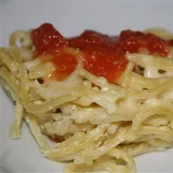

Spaghetti Pie
g

Description
This is a recipe I found from a quick Google search. Looks good, but who knows? Spaghetti meets pie. Why the heck not!?
Ingredients
- 1 16 ounce package of spaghetti
- 2 cups cracker crumbs
- 1 cup grated parmesan cheese
- 2 tablespoons chopped fresh parsley
- 1 tablespoon dried minced onion, divided
- 1 tablespoon garlic salt, divided
- 1 1/2 sticks butter, melted
- 2 cups milk
- 4 eggs
Steps
- Bring a large pot of lightly salted water to a boil, stirring occasionally, until tender yet firm to the bite, about 12 minutes. Drain thoroughly.
- Preheat the oven to 350 degrees F (175 degrees C). thoroughly butter a 9x13-inch baking pan
- Layer the half cooked spaghetti into the bottom of the prepared pan. Sprinkle half the cracker crumbs, half the parmesan cheese, half the parsley, half the minced onion, and half the garlic salt on top. Pour in half of the melted butter. Repeat with remaining spaghetti, cracker crumbs, parmesan cheese, parsley, minced onion, garlic salt, and butter.
- Mix milk and eggs together in a bowl. Pour over the spaghetti mixture.
- Bake in the preheated oven until set, about 30 minutes. Cut pie in squares.
Note: While baking, make your favorite pasta sauce on the side